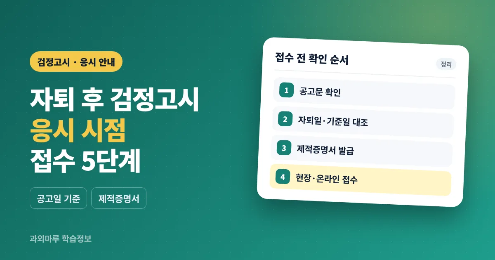

- 자퇴 후 응시는 공고일 기준 6개월이 지나야 가능, 시험일 기준이 아님
- 휴학 중이면 재학생으로 보아 응시 불가, 자격은 시험일까지 유지
- 접수 서류의 핵심은 제적증명서, 합격은 평균 60점 이상(결시 과목 없이)
고등학교 자퇴 후 언제부터 검정고시를 볼 수 있나요?
자퇴일부터 해당 회차 공고일까지 6개월이 지나야 고졸 검정고시에 응시할 수 있습니다. 기준은 시험일이 아니라 공고일이므로, 시험일로 계산하면 착오가 생길 수 있습니다.
고졸 검정고시는 고등학교를 졸업하지 않은 사람이 고등학교 졸업 학력을 인정받는 시험입니다. 초·중등교육법 시행규칙에 따라 시·도교육청 검정고시위원회가 시행하며, 시험 2개월 전에 공고합니다. 찾기쉬운 생활법령정보와 서울특별시교육청 안내는 퇴학일부터 공고일까지 6개월이 되지 않은 사람을 응시 제한 대상으로 설명합니다.
2026년도 제2회 경기도교육청 공고는 이 기준을 날짜로 적었습니다. 공고일은 2026년 6월 10일이고, 2025년 12월 11일 이후(당일 포함) 재학 중 제적(자퇴, 퇴학 등 포함)된 사람은 응시할 수 없다고 명시했습니다. 자퇴도 제적에 포함해 판단한다는 뜻입니다. 다만 등록 장애인이 장애로 학업을 계속할 수 없어 자퇴한 경우는 공고의 예외에 해당합니다.
| 자퇴 시점 (예시) | 다음 회차 (예년 공고 시기 기준) | 확인할 점 |
|---|---|---|
| 2026년 7월 이전 | 2027년 제1회 (2월 전후 공고) | 공고일 기준 6개월 충족 여부 |
| 2026년 8월~11월 | 2027년 제2회 (6월 전후 공고) | 제1회는 공고일에 따라 기준에 못 미칠 수 있음 |
| 2026년 12월 | 공고일에 따라 2027년 제2회가 어려울 수 있음 | 공고문의 제한 기준일과 자퇴일 대조 |
위 표는 이해를 돕기 위한 예시입니다. 2026년 11월 현재 2027년도 공고는 아직 나오지 않았으므로, 실제 판단은 해당 회차 공고문의 기준일로 해야 합니다. 일정 흐름은 2027년 검정고시 일정 안내에서 따로 정리했습니다.
고졸 검정고시 응시 자격과 제한은 어떻게 되나요?
중학교를 졸업했거나 같은 수준의 학력을 인정받은 사람이 응시할 수 있습니다. 고등학교에 재학 중이거나 휴학 중인 사람, 공고에서 정한 기준일 이후 자퇴·제적된 사람은 응시할 수 없습니다.
| 구분 | 공고 기준 내용 (요지) |
|---|---|
| 응시 가능 | 중학교 졸업자, 동등 이상 학력 인정자, 중졸 검정고시 합격자 등 |
| 재학·휴학 | 고등학교 재학 중인 사람은 제한되며 휴학 중인 사람도 포함 |
| 자퇴·제적 | 공고일 전 6개월 시점의 기준일 이후 제적(자퇴, 퇴학 등 포함)되면 제한 |
| 기타 | 공고일 이후 중학교 졸업자, 제한 기간이 지나지 않은 부정행위자 등 |
자격은 접수할 때만이 아니라 시험일까지 유지되어야 합니다. 경기도교육청 공고에 따르면 접수 후 시험일 전에 편입학 등으로 재학생이 되면 자격을 잃습니다. 휴학만 한 상태에서는 응시할 수 없다는 점도 자주 놓치는 부분입니다. 학업 유예 등 학적 상태가 복잡하면 학교와 관할 교육청에 먼저 문의해 주세요.
고2 자퇴나 고1 자퇴는 응시 시기가 다른가요?
공고문의 제한 기준은 학년이 아니라 자퇴일과 공고일 사이의 기간입니다. 고1이든 고2든 중학교 졸업 학력이 있고 6개월 기준을 충족하면 같은 조건으로 판단합니다.
학년보다 먼저 챙길 것은 학적 처리일입니다. 학교에 의사를 밝힌 날과 실제 학적이 정리된 날이 다를 수 있으므로, 제적증명서에 적힌 날짜를 기준으로 계산하는 것이 안전합니다. 자퇴 절차, 재입학 가능 여부는 학교 규정에 따라 다를 수 있어 담임 선생님이나 학교에 직접 확인이 필요합니다. 대학 진학을 생각한다면 검정고시 출신 지원 자격과 전형 방법도 지원할 대학의 모집요강에서 따로 확인해 주세요.
- 학적 처리일 — 제적증명서에 적힐 날짜를 학교에 확인
- 목표 회차 — 그 날짜로 응시 가능한 회차 계산
- 최종 학력 — 중학교 졸업 증빙 방법 확인
- 진로 계획 — 대학 진학·취업에 필요한 조건을 해당 기관 안내로 확인
- 학습 공백 — 시험까지 공부 시간과 도움받을 곳 정리
검정고시 원서 접수에 필요한 서류는 무엇인가요?
자퇴·중퇴자는 응시원서, 사진, 제적증명서, 신분증을 준비합니다. 경기도교육청 2026년도 제2회 공고 기준이며, 세부 서식은 지역과 회차별 공고문을 따릅니다.
| 항목 | 현장 접수 | 온라인 접수 |
|---|---|---|
| 응시원서 | 접수처에서 교부 | 사이트에서 입력·제출 |
| 사진 | 여권용 2매 (3.5×4.5cm, 6개월 이내) | 전자파일 1매 (jpg·gif, 1MB 이하) |
| 학력 서류 | 제적증명서 등 최종학력증명서 | 전자파일 업로드 (jpg·gif·pdf) |
| 신분증 | 원본 지참 (모바일 신분증 불가) | 공고문 확인 |
| 응시수수료 | 무료 | 무료 |
이미 과목합격한 과목의 면제를 받으려면 과목합격증명서 등 해당 서류를 추가로 내야 합니다. 면제를 신청하지 않으면 혜택을 받을 수 없습니다. 사진 규격과 유효 기간은 교육청마다 조금씩 다르게 안내되기도 하므로(예: 서울·부산 안내는 3개월 이내) 응시 지역의 공고문으로 맞춰 준비하세요.
검정고시 원서접수는 어떤 순서로 하나요?
응시하려는 지역 교육청의 공고문을 확인한 뒤, 정해진 기간에 현장이나 온라인 중 한 가지로 접수합니다. 두 방식의 중복 접수는 인정되지 않습니다.
- 응시 지역 시·도교육청 누리집에서 공고문을 내려받습니다.
- 제한 기준일과 자퇴일을 대조합니다.
- 학교에서 제적증명서를, 필요하면 과목합격증명서 등을 발급받습니다.
- 현장 접수 또는 나이스 검정고시서비스(kged.go.kr) 온라인 접수를 선택합니다.
- 수험표를 출력하고 시험장 공고를 확인합니다.
2026년도 제2회 경기도교육청 공고에서는 현장 접수가 6월 22일~26일, 온라인 접수가 6월 22일~25일 18시까지로 온라인이 하루 짧았습니다. 온라인에서 입력만 하고 제출하지 않으면 접수되지 않으며, 본인 공동인증서·금융인증서·간편인증이 필요합니다. 부산광역시교육청 민원 안내처럼 접수 방법을 방문으로 적어 둔 곳도 있어, 온라인 가능 여부는 공고문에서 반드시 확인해 주세요.
시험 과목과 합격 기준은 어떻게 되나요?
필수 6과목과 선택 1과목, 총 7과목을 보고 전 과목 평균 60점 이상이면 합격합니다. 평균이 넘어도 결시한 과목이 있으면 불합격입니다.
| 구분 | 내용 |
|---|---|
| 필수 과목 | 국어, 수학, 영어, 사회, 과학, 한국사 |
| 선택 과목 | 도덕, 기술·가정, 체육, 음악, 미술 중 1과목 |
| 시험 방식 | 객관식 필기 (4지 택일) |
| 합격 | 과목당 100점 만점, 전 과목 평균 60점 이상 |
| 과목합격 | 60점 이상 과목은 과목합격 인정, 다음 회차부터 면제 신청 가능 |
과목합격한 과목을 다시 응시하면 이전 점수와 관계없이 다시 본 점수로 계산한다고 경기도교육청 공고는 안내합니다. 출제 범위와 문항 수는 회차별 공고와 한국교육과정평가원 안내를 확인해 주세요.
자퇴 후 검정고시 준비는 얼마나, 어떻게 하면 좋을까요?
필요한 기간은 학생의 현재 학습 상태에 따라 달라 정해진 답이 없습니다. 먼저 과목별 기출문제로 현재 위치를 확인한 뒤, 평균 60점이라는 기준에 맞춰 계획을 세우는 방법이 현실적입니다.
| 단계 (예시) | 할 일 |
|---|---|
| 시작 2주 | 과목별 기출 1회분으로 현재 위치 확인, 생활 시간표 고정 |
| 개념 단계 | 수학·영어처럼 기초 공백이 큰 과목부터 개념 정리 |
| 기출 단계 | 최근 기출을 과목별로 풀고 틀린 유형 정리 |
| 시험 전 한 달 | 시간을 재고 실전 연습, 접수 서류와 수험표 확인 |
수업에서 자주 보는 경우는 학교를 떠난 뒤 생활 리듬이 먼저 흔들리는 것입니다. 기상 시간과 공부 시작 시간을 먼저 고정하면 계획을 유지하기 쉽습니다. 평균으로 합격이 결정되므로 비교적 자신 있는 과목에서 점수를 확보하고, 약한 과목은 결시 없이 응시할 수 있도록 기초를 잡는 순서로 조정합니다. 1:1 수업에서는 일반적으로 진단 후 공백이 큰 과목부터 순서를 정해 진행하는 경우가 많으며, 방식은 검정고시 과외 안내와 방문과외·화상과외 비교 글에서 볼 수 있습니다.
자주 묻는 질문
고등학교 자퇴하면 언제 검정고시를 볼 수 있나요?
자퇴일부터 해당 회차 공고일까지 6개월이 지나야 응시할 수 있습니다. 2026년도 제2회 경기도교육청 공고는 공고일이 6월 10일이었고, 2025년 12월 11일 이후 제적자는 응시할 수 없다고 정했습니다. 회차마다 기준일이 다르니 공고문을 확인해 주세요.
휴학 중에도 고졸 검정고시를 볼 수 있나요?
볼 수 없습니다. 공고문은 재학 중인 사람에 휴학 중인 사람을 포함합니다. 다만 특수교육대상자 중 공고일 이전에 정원외로 관리되는 경우 등 예외가 있으니 해당 공고문을 확인해 주세요.
검정고시 접수는 어떻게 하나요?
시·도교육청 공고문이 정한 기간에 현장 또는 온라인으로 접수합니다. 2026년도 제2회 경기도교육청 공고에서는 나이스 검정고시서비스 온라인 접수와 현장 접수를 모두 운영했고 중복 접수는 인정하지 않았습니다. 지역별로 방법이 다를 수 있으니 공고문을 확인해 주세요.
자퇴생은 어떤 서류를 내야 하나요?
학교에서 발급받은 제적증명서를 최종학력증명서로 냅니다. 여기에 응시원서, 사진, 신분증이 필요하고 과목 면제를 받으려면 과목합격증명서 등을 추가합니다. 서류 서식은 공고문의 별첨을 따릅니다.
검정고시 응시료가 있나요?
2026년도 제2회 경기도교육청 공고와 부산광역시교육청 안내에는 응시수수료가 무료로 적혀 있습니다. 수수료는 시·도 조례로 정하므로 응시 지역 공고문을 확인해 주세요.
한 과목만 불합격하면 다시 전부 봐야 하나요?
60점 이상 받은 과목은 과목합격으로 인정되어 다음 회차부터 면제를 신청할 수 있습니다. 면제 신청을 해야 혜택을 받으며, 해당 과목을 다시 응시하면 재응시 점수가 반영됩니다.
참고 자료
- 경기도교육청, 「2026년도 제2회 초등학교·중학교·고등학교 졸업학력 검정고시 시행 공고(제2026-248호)」 — https://www.goe.go.kr/resource/goe/na/bbs_1942/2026/06/f2d3f70c-a358-48ad-a585-774e95f9aab2.pdf
- 서울특별시교육청, 「검정고시안내 고졸안내」 — https://www.sen.go.kr/www/news/exam/gosiexam/gosiexam_3.jsp
- 찾기쉬운 생활법령정보(법제처), 「학교 밖 청소년 - 검정고시」 — https://www.easylaw.go.kr/CSP/CnpClsMain.laf?csmSeq=746&ccfNo=2&cciNo=1&cnpClsNo=2
- 부산광역시교육청, 「초·중·고졸 검정고시 안내」 — https://www.pen.go.kr/main/cm/cntnts/cntntsView.do?mi=30383&cntntsId=194
- 서울특별시교육청, 「2026년도 제2회 초·중·고 졸업학력 검정고시 원서 교부 및 접수」 — https://enews.sen.go.kr/news/view.do?bbsSn=191483&step1=3&step2=1
이 글은 일반적인 참고 정보이며, 자퇴를 권유하거나 판단을 대신하지 않습니다. 2027년도 공고는 아직 나오지 않았으므로 응시 제한 기준일, 접수 방법, 제출 서류는 응시 지역 시·도교육청 공고문을 확인해 주세요.
학습 상황과 목표 회차를 남겨주시면 상담 내용을 확인해 안내드립니다.